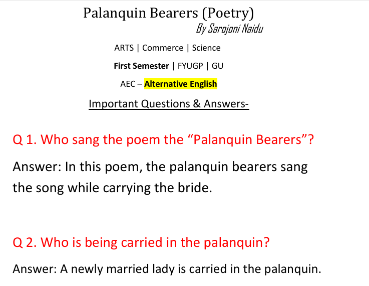

Palanquin Bearers Notes - BA 1st Semester
Table of Contents
Notes Information
| Subject: | Alternative English (AEC) |
| Course: | Bachelor of Arts (BA) |
| Semester: | 1st Semester |
| Poem: | Palanquin Bearers |
| Author: | Sarojini Naidu |
| Total Pages: | 9 |
Notes Preview

File Size: 1.2 MB | Pages: 9 | Format: PDF
Notes Details
These notes cover the poem 'Palanquin Bearers' by Sarojini Naidu, part of the BA 1st Semester AEC - Alternative English syllabus at Gauhati University. The notes include important questions and answers to aid in exam preparation.
Course Type
FYUGP
University
Gauhati University
Academic Year
2024-2025
Focus
Poetry Analysis and Comprehension
Important Questions & Answers
Below are key questions and answers from the 'Palanquin Bearers' notes:
- Q1. Who sang the poem the "Palanquin Bearers"?
Answer: In this poem, the palanquin bearers sang the song while carrying the bride. - Q2. Who is being carried in the palanquin?
Answer: A newly married lady is carried in the palanquin.
- Q3. Where are they carrying the palanquin?
Answer: They are carrying the palanquin to the home of the bride's husband.
- Q4. What purpose do similes serve in the poem "Palanquin Bearers"?
Answer: In this poem, similes are used to describe the delicacy, softness, and embalming beauty of the lady. - Q5. How does the poet describe the movement of the palanquin?
Answer: The poet describes the movement of the palanquin by comparing it to a beam gliding over a stream.
Preparation Tips
To effectively prepare for the 'Palanquin Bearers' section in your AEC exam, consider these strategies:
1. Understand the Poem
Focus on the themes, tone, and imagery used by Sarojini Naidu:
- Analyze the use of similes and metaphors.
- Understand the cultural context of palanquins.
2. Practice Question Answers
Develop concise and well-structured answers:
- Memorize key answers from the notes.
- Practice writing within time limits.
- Use examples from the poem to support answers.
3. Revise Regularly
Regular revision will help retain the content:
- Review notes weekly.
- Discuss with peers to clarify doubts.
- Refer to the poem text for deeper insight.